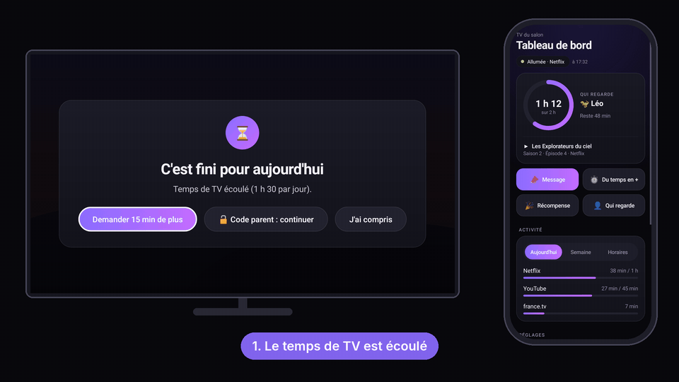
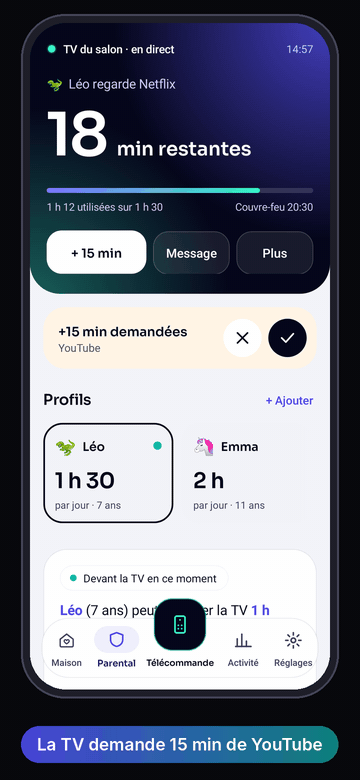
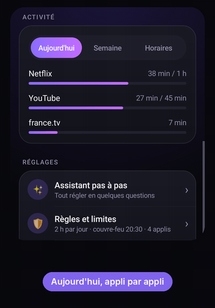
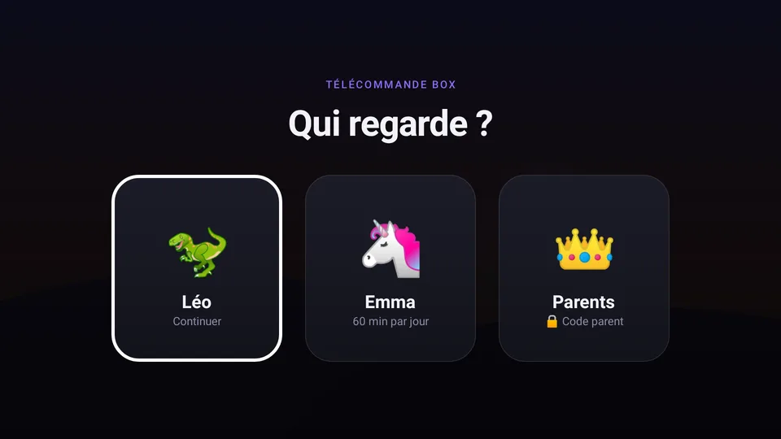
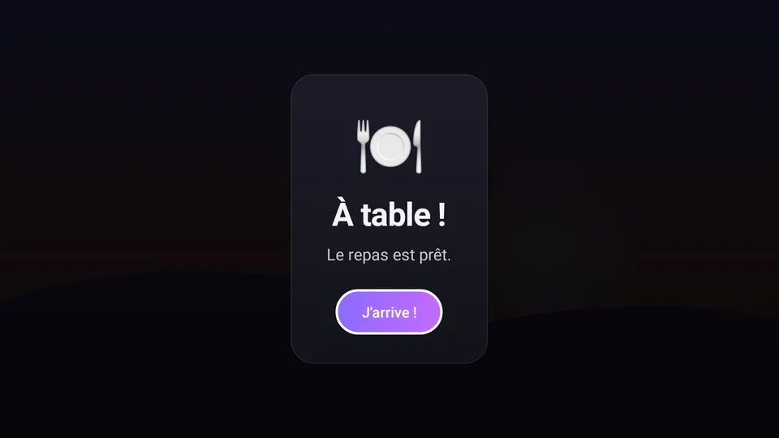
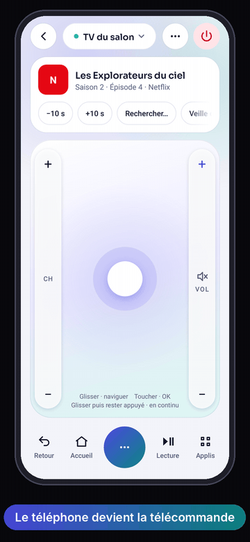

Le contrôle parental de la TV,
depuis votre téléphone.
Temps d'écran par jour, couvre-feu, un profil par enfant, applis bloquées : vous fixez les règles, la TV les applique, même téléphone éteint. Et en bonus, votre téléphone devient la télécommande.

Des règles claires, appliquées par la TV elle-même.
L'appli installée sur la TV surveille le temps passé et applique vos règles. Quand l'enfant veut plus de temps, c'est vous qui décidez, depuis votre téléphone.
Comment se passe une demande de temps



Et sur la TV, des écrans clairs pour les enfants




En bonus : plus besoin de chercher la télécommande sous le canapé.
- Un grand pavé tactile : on glisse pour se déplacer, on touche pour valider.
- Double-toucher à gauche ou à droite pour reculer ou avancer de 10 secondes.
- Volume, chaînes, accueil, retour, lecture : tout est à portée de pouce.
- Le clavier du téléphone pour taper une recherche, au lieu de la lettre par lettre.
- Ce qui passe à l'écran s'affiche en haut, avec des raccourcis adaptés.
Pensée pour les box Android TV et Google TV (testée sur Freebox Pop). Elle sait aussi piloter de nombreuses TV : Samsung, LG, Sony, Philips, Panasonic, Roku, Kodi, et les télécommandes infrarouges des téléphones qui en ont.
Vos données ne quittent pas la maison.
Aucun serveur, aucun compte
Le téléphone et la TV se parlent directement, sur le Wi-Fi de la maison. Il n'y a pas de cloud, pas d'inscription, pas de publicité.
Tout est chiffré
Les échanges sont chiffrés et liés à vos deux appareils. Le code parent n'est jamais envoyé, et les réglages sont chiffrés sur la TV.
Open source
Le code est public sous licence GPL-3.0 : tout le monde peut vérifier ce que fait l'appli, et l'améliorer.
Prêt en une dizaine de minutes.
📺 Sur la TV (box Android TV / Google TV)
- Installez Downloader depuis le Play Store de la TV.
- Ouvrez Downloader et tapez l'adresse :
telecommande-box.netlify.app/b - Autorisez l'installation si la TV le demande, puis Installer › Ouvrir.
- Activez l'option demandée : Paramètres › Accessibilité › Télécommande Box. C'est elle qui permet à la TV d'appliquer les règles.
📱 Sur le téléphone (Android 5 et plus)
- Téléchargez l'appli et autorisez l'installation depuis le navigateur.
- Ouvrez-la : elle trouve la TV sur le Wi-Fi de la maison.
- Pour le contrôle parental : Temps d'écran › Appairer l'appli Box, puis tapez le code affiché sur la TV.
Raccourci à taper dans un navigateur : telecommande-box.netlify.app/t
Ensuite, les deux applis se mettent à jour seules depuis ce site, après vérification de leur empreinte.
Questions fréquentes
C'est vraiment gratuit ?
Oui. C'est un projet personnel, sans publicité ni abonnement, et le code est libre.
Pourquoi l'appli n'est-elle pas sur le Play Store ?
Pour l'instant, elle se télécharge depuis ce site. Android demande donc d'autoriser l'installation : c'est normal pour une appli hors Play Store.
Et si l'enfant éteint le téléphone du parent ?
Les règles sont sur la TV : elle les applique même quand le téléphone est éteint ou absent.
Ma TV est-elle compatible ?
Le contrôle parental fonctionne sur les box et TV Android TV / Google TV (Android 6 et plus). Il est testé sur Freebox Pop. La télécommande seule fonctionne avec beaucoup plus d'appareils.
Je trouve un bug, je fais comment ?
Ouvrez un ticket sur GitHub, idéalement avec le journal de l'appli (menu ⋮ › Journal de diagnostic).